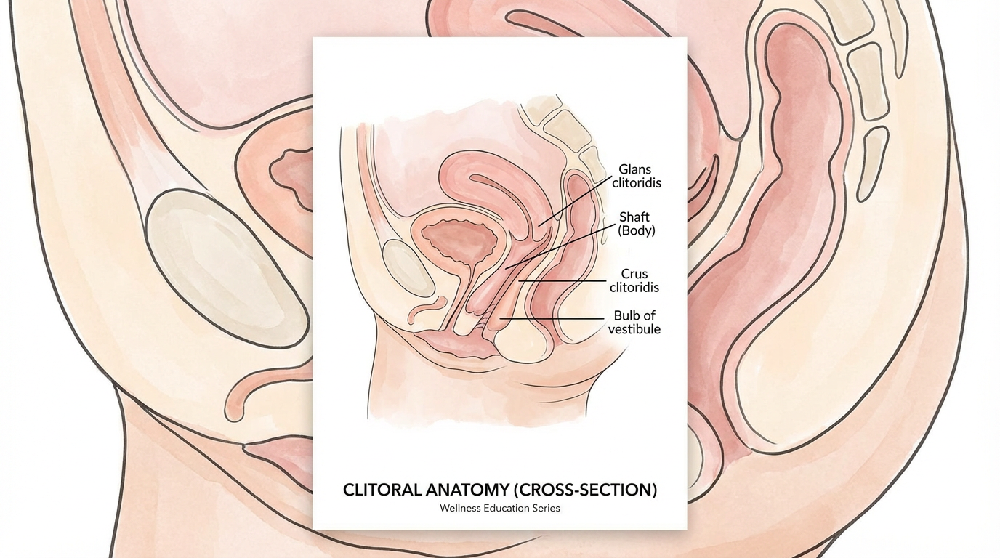
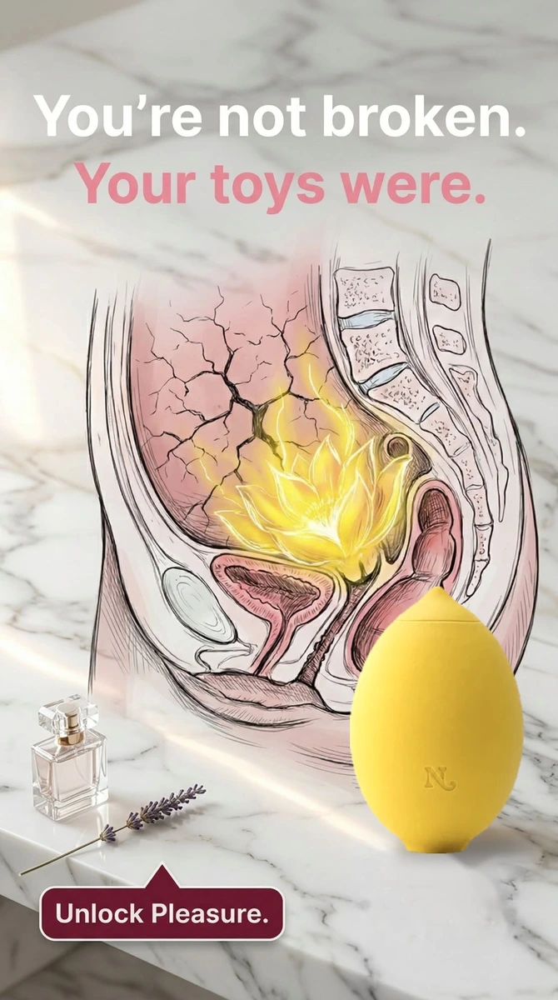

Why This Conversation Matters
It can start with a familiar routine that no longer feels quite so familiar. The setting that once felt right may call for a different pace, a different approach, or simply more time. For a woman used to knowing what works for her, that uncertainty can be frustrating.
But a changing routine is not a failing body. This is a story about making space for a new chapter, without pressure to feel exactly as before. A self-care device can be an option to explore, not a promise to fix something.
The Part That Can Feel Different
Menopause is often discussed through hot flashes and sleep changes, while shifts in comfort, interest, or response can receive much less attention. For some women, familiar routines simply stop feeling familiar.
The useful reminder is this: a change in response is not a personal failure. There is no required pace, setting, or outcome for self-care.
Menopause experiences are not one-size-fits-all. Comfort, interest, and preferences can change, and not every woman experiences the same changes. Persistent pain, dryness, or other concerning symptoms deserve a conversation with a healthcare professional.
When Familiar Routines Change
A familiar routine may feel too intense, too direct, or simply not right anymore. It is easy to turn that frustration inward. A more useful question is whether the routine, rather than the person, needs a rethink.
Different approaches suit different preferences. Starting again does not have to mean doing more or pushing harder. It can mean making a small change, going slowly, and paying attention to comfort.
A new chapter can call for a different routine.
A reminder worth keeping
There is no need to force an old routine to fit every stage of life. Comfort is personal, and a different approach is a choice to explore at your own pace. Lem is a self-care product, not a treatment for menopause-related symptoms.
A Different Kind of Self-Care Device
That is where this little yellow device enters the story. Nancy's Lem combines a lemon-inspired design with an air-pulse format, offering an alternative to a familiar vibration-based routine. The appeal is not a medical promise. It is another option.
Lem uses Air Pulse Technology, which creates a different sensation from conventional vibration. Its adjustable settings make it possible to begin low and explore gradually, rather than assuming one setting should suit everyone.
A Practical Note on Body Changes

Stylized educational cross-section of clitoral anatomy. Not to scale, and not a diagram of menopause changes or treatment effects.
The Science of Pleasure
Menopause does not create one universal experience. Comfort, interest, sensitivity, and preferences can change over time, and a change is not a failure.
The clitoris is a highly sensitive organ involved in sexual pleasure. What feels comfortable or pleasurable varies from person to person, so there is no single kind of stimulation that everyone should prefer.
There is no single timetable, setting, or response to aim for. What felt familiar at one point in life may not be the preferred approach later. Giving a routine room to change can be more useful than comparing it with the past.
NHS inform and Johns Hopkins describe a range of experiences with intimacy after menopause. The important distinction is that general menopause guidance is not proof of a product's medical benefit. Lem is discussed here as an optional self-care device.
General health context: NHS inform · Johns Hopkins Medicine · Cleveland Clinic anatomy reference
What Can Change During Menopause:
During menopause, some people experience vaginal dryness or discomfort, or changes in sexual desire. Others may enjoy intimacy more or notice different preferences. Persistent pain or dryness are reasons to speak with a healthcare professional.
What may change:
- Comfort or dryness may change
- Interest or response may vary
- Preferences can shift over time
- Some people notice changes in arousal or sexual response, while others notice little change.
- Persistent concerns can be discussed with a clinician
What may help with a self-care routine:
- Choose a pace and pressure that feels comfortable
- Start with a low setting and adjust gradually
- Pause or stop if something feels uncomfortable
- Explore preferences without a required outcome
- Follow the manual and product care instructions
Feeling Different After Menopause Doesn’t Mean You’re Broken

Advertising illustration, not a medical diagram or evidence of treatment. Comparison graphics contain advertiser-supplied claims, not independently verified test results.
Editorial takeaway: A clinician can help with persistent or concerning symptoms. A self-care device is not a substitute for medical care.
The Bottom Line:
Not broken. Just a new chapter. That can mean slowing down, changing a routine, talking with a partner, or asking a clinician about a concern. Lem is not a treatment or preventive therapy for menopause-related changes.
How to Think About Air Pulse Technology
Traditional vibration formats:
Contact, intensity, and comfort vary by product. Check the instructions and choose what feels right for you.
Air Pulse Technology:
Adjustable air pulses offer a different feel, with settings that can be explored gradually. Individual comfort and preferences still matter.
Lem is designed to create an air seal and deliver changing pressure rather than relying on the same sensation as a conventional vibrator. Start with the lowest comfortable setting, follow the manual, and pause whenever you want.
The practical point is choice: a different format, a discreet design, and room to explore without a deadline. There is no promised result to chase and no need to compare one person's experience with another's.
A different approach is an option, not another expectation to live up to.
For a pressure-free routine
A Practical Comparison
A useful comparison starts with everyday details: the format, settings, design, cleaning, support, and cost. This is a product comparison, not a claim that one approach treats menopause better than another.
| Feature | Nancy's Lem | Vibration device | Topical wellness product |
|---|---|---|---|
| Settings | 12 adjustable settings | Varies by product | Varies by product |
| Discretion | Lemon-inspired design | Varies by product | Varies by product |
| Contact style | Air-pulse approach; comfort varies | Contact and vibration; comfort varies | Topical application; comfort varies |
| Beginner-friendly | Start low and adjust to preference | Varies by product | Varies by product |
| Cleaning | Follow the current care instructions | Follow the product instructions | Follow the product instructions |
| Support | 30-day return/exchange policy and 12-month defect warranty, subject to terms | Check product details | Check product details |
| Price | $89 one-time offer price | Varies by product | Varies by product |
A Discreet Design for a New Routine
The bright yellow, lemon-inspired design feels a world away from clinical-looking equipment. The details are practical too: straightforward controls, a distinctive shape, and a pouch that gives it a place in a private routine.
The Nightstand Test
A private routine should feel private because it is yours, not because it is something to be ashamed of. The supplied drawer photo shows Lem tucked into its grey pouch, ready to be stored wherever feels right.
A routine can be private without feeling like something to hide.
Thoughtful design is only part of the decision. What matters most is finding a format and pace that suit the person using it, with clear instructions and no pressure to perform.
A Note on Comparing Products
A lower price is not the only comparison worth making. Look at materials, care instructions, settings, warranty coverage, customer support, and the return policy before ordering.
Editorial takeaway: Compare materials, care instructions, warranty, support, and policy terms before choosing any self-care device.
Check the materials and care instructions as carefully as the price. Choose the genuine product, follow the cleaning guidance, and take a moment to understand what the warranty and return policy cover.
Quiet Operation
Designed for quiet operation. Sound varies with the setting and surroundings.
Waterproof (IPX7)
Listed by Hello Nancy as IPX7. Follow your model’s current instructions around water.
Silicone Exterior
Hello Nancy lists silicone materials. Follow the cleaning instructions for your model.
Rechargeable Design
Hello Nancy lists magnetic and USB-C versions. Check the charging connection supplied with yours.
Product Gallery
The Unboxing Experience: What Is Actually Included
The actual unboxing shows a Nancy-branded box, the bright yellow Lem, and a pink storage pouch. Rather than leaving the device without a home, the kit gives it a place to be stored and instructions to help with getting started.
What's Inside the Box:
- The Lem device (bright yellow, palm-sized)
- Charging cable for the supplied version
- Soft velvet storage pouch (perfect for travel)
- "Self-Love Manual" with usage tips and wellness advice
- Quick-start guide with illustrated instructions
A place to keep it. Instructions to get started. A routine to make your own.
What About a Partner? Preferences Can Be Shared
Making Room for Shared Preferences
Connection does not need a stopwatch. Some people prefer to explore privately, while others choose to include a partner. Either way, the aim is a routine that feels welcome, not another expectation to meet.
A common question is whether a self-care device changes the meaning of partnered time.
It does not have to. Couples can talk about comfort, boundaries, settings, and whether a device belongs in their shared routine. The decision should be mutual and pressure-free.
Editorial takeaway: Shared routines work best when both people communicate and respect changing preferences.
What if my partner feels unsure?
A device can be one optional part of a routine, not a replacement for communication or connection. Talk about what feels comfortable, and leave room for either person to change their mind.
Editorial takeaway: A supportive partner listens, asks, and respects the pace that feels right to the person using the device.
A conversation, not a competition
Its discreet design can be part of a private or shared routine. Whichever approach is chosen, comfort, consent, and the product instructions come first.
Ways to Make Room for Lem:
During shared warm-up
A partner can hold it or simply be present, if both people want that
During partnered time
Use only in ways that follow the manual and feel comfortable to everyone involved
Private exploration with a partner aware
Can support communication about settings and preferences
Between shared sessions
Private self-care can be separate from partnered routines
Practical tip: Talk openly, go slowly, and treat changing preferences as normal.
The Practical Reassurance Behind the Purchase
The purchase decision includes more than the device itself. Here are the return, warranty, and support details to consider before ordering.
30-Day Return/Exchange Policy
Hello Nancy’s listed 30-day policy offers a full refund for unopened, unused products in original packaging. Opened products may qualify for an exchange under its one-time courtesy policy, subject to exclusions. Contact customer care and check the current terms.
Opened and unopened products are handled differently. Review the current terms so you know what to expect.
12-Month Defect Warranty
The listed warranty covers device issues during the first 12 months. Check the current warranty terms for replacement eligibility and exclusions.
A warranty offers support for covered device issues. It does not guarantee a particular personal experience.
Customer Support
Hello Nancy's customer care team can help with product-use, charging, cleaning, and storage questions through its support channel.
Product questions belong with customer care; health concerns belong with a qualified healthcare professional.
The Real Question: What Fits Your Routine?
A new chapter does not require a big declaration. It can start with one thoughtful decision: whether the design, format, settings, and support fit the kind of routine someone wants to explore.
A Small Decision, at Your Own Pace:
If You Try It:
- You may find a quieter, more private self-care routine
- You can adjust settings to your preference
- You can pause or stop at any time
- The listed offer price is $89, subject to the offer terms
If You Don't:
- Your current routine can remain exactly as it is
- You can revisit the choice later
- You can ask a clinician about persistent concerns
- You do not owe anyone a deadline or a particular outcome
Why Hello Nancy Is Included in This Review
Discreet design is only part of the story. The published customer reviews, product information, support, and purchase policies provide other details to consider. The figures below are the source's published counts, not evidence of a medical outcome.
Source Claim: 1.4M+ Orders
Published in the supplied reference page; not independently audited here.
Merchant-Published Reviews
Hello Nancy currently lists a 4.8/5 rating from 20,653 reviews. This is a merchant-reported figure, not our purchase verification.
Source Claim: 1.1M+ Sold
Published in the supplied reference page; not evidence of an orgasm total or a medical result.
Materials and Care
Review the merchant’s materials listing and follow the current care instructions. No laboratory safety testing is claimed here.